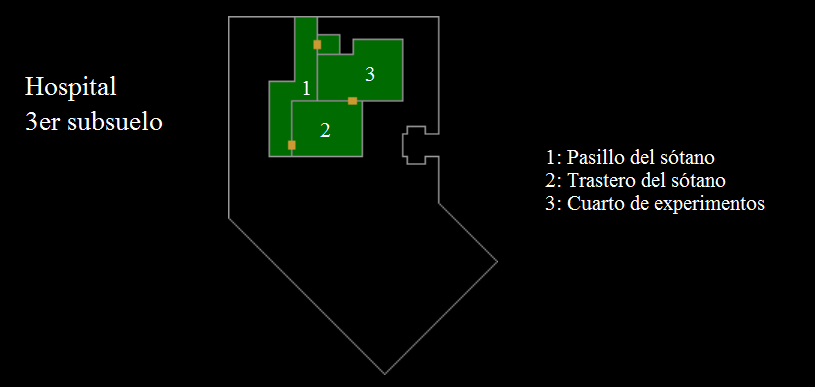

Mapas del hospital
Conocé la distribución general del Hospital Raccoon City. Algunos accesos se encuentran clausurados por motivos de seguridad institucional.

Planta Baja
Área de recepción, quirófano, sala de decisiones.

4to Piso
Habitaciones, cuarto de datos y pasillo de control.

3er Subsuelo
Laboratorio experimental, trastero y pasillos restringidos.
Aviso Legal
Este sitio web ha sido desarrollado con fines académicos como parte de una actividad escolar. El contenido está inspirado en la saga Resident Evil de Capcom.
Las imágenes, nombres y referencias pertenecen a sus respectivos autores. No se pretende infringir ningún derecho de autor ni lucrar con este material.